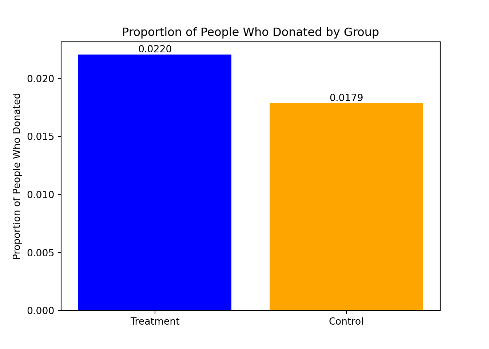
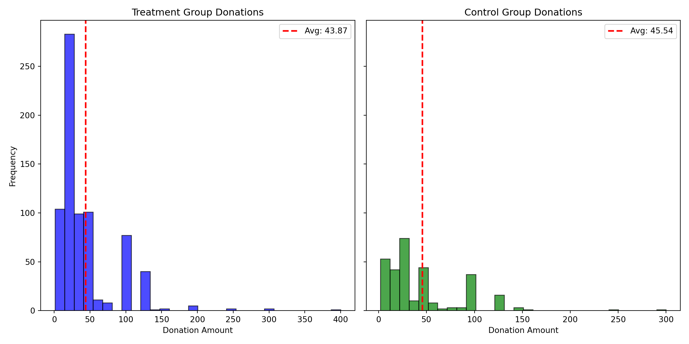
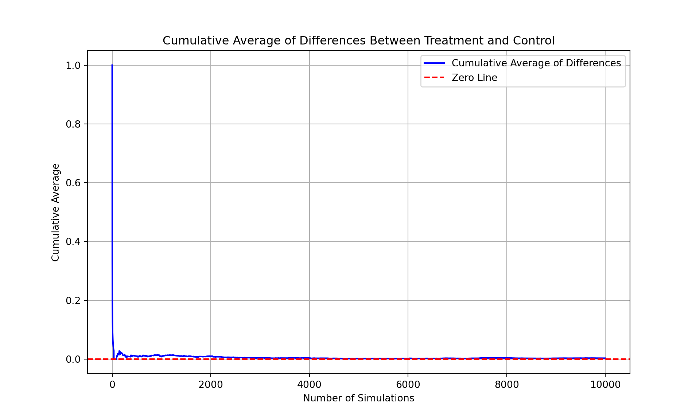
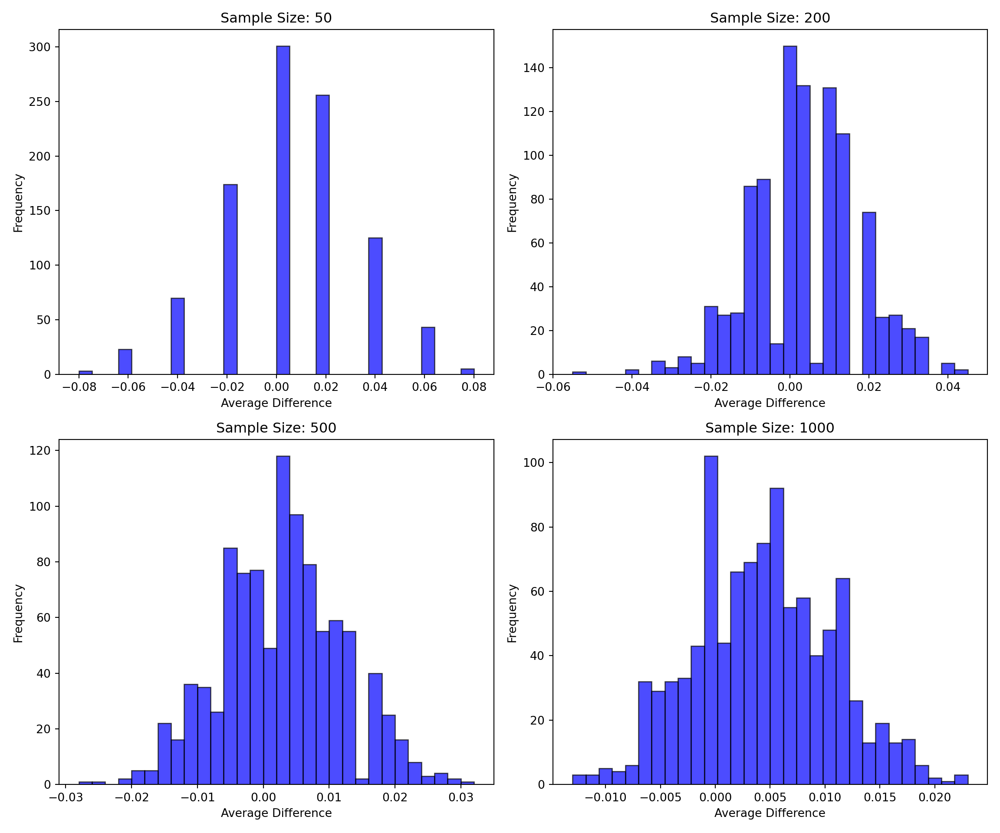

import sys
print(sys.executable)/opt/conda/bin/python3Alex Wissman
May 12, 2025
Dean Karlan at Yale and John List at the University of Chicago conducted a field experiment to test the effectiveness of different fundraising letters. They sent out 50,000 fundraising letters to potential donors, randomly assigning each letter to one of three treatments: a standard letter, a matching grant letter, or a challenge grant letter. They published the results of this experiment in the American Economic Review in 2007. The article and supporting data are available from the AEA website and from Innovations for Poverty Action as part of Harvard’s Dataverse.
By comparing the response rates and donation amounts across the three groups, Karlan and List were able to isolate the causal effect of different fundraising strategies on donor behavior. Their findings showed that matching grants significantly increased both the likelihood of giving and the average donation amount.
This project seeks to replicate their results.
import pandas as pd
import scipy as sp
import numpy as np
import statsmodels.api as sm
import pyrsm as rsm
import matplotlib.pyplot as plt
# Load the data
dataf = pd.read_stata("/home/jovyan/mysite/karlan_list_2007.dta")
# Display the first few rows of the dataset
print(dataf.head()) treatment control ratio ... powner psch_atlstba pop_propurban
0 0 1 Control ... 0.499807 0.324528 1.0
1 0 1 Control ... NaN NaN NaN
2 1 0 1 ... 0.721941 0.192668 1.0
3 1 0 1 ... 0.920431 0.412142 1.0
4 1 0 1 ... 0.416072 0.439965 1.0
[5 rows x 51 columns]| Variable | Description |
|---|---|
treatment |
Treatment |
control |
Control |
ratio |
Match ratio |
ratio2 |
2:1 match ratio |
ratio3 |
3:1 match ratio |
size |
Match threshold |
size25 |
$25,000 match threshold |
size50 |
$50,000 match threshold |
size100 |
$100,000 match threshold |
sizeno |
Unstated match threshold |
ask |
Suggested donation amount |
askd1 |
Suggested donation was highest previous contribution |
askd2 |
Suggested donation was 1.25 x highest previous contribution |
askd3 |
Suggested donation was 1.50 x highest previous contribution |
ask1 |
Highest previous contribution (for suggestion) |
ask2 |
1.25 x highest previous contribution (for suggestion) |
ask3 |
1.50 x highest previous contribution (for suggestion) |
amount |
Dollars given |
gave |
Gave anything |
amountchange |
Change in amount given |
hpa |
Highest previous contribution |
ltmedmra |
Small prior donor: last gift was less than median $35 |
freq |
Number of prior donations |
years |
Number of years since initial donation |
year5 |
At least 5 years since initial donation |
mrm2 |
Number of months since last donation |
dormant |
Already donated in 2005 |
female |
Female |
couple |
Couple |
state50one |
State tag: 1 for one observation of each of 50 states; 0 otherwise |
nonlit |
Nonlitigation |
cases |
Court cases from state in 2004-5 in which organization was involved |
statecnt |
Percent of sample from state |
stateresponse |
Proportion of sample from the state who gave |
stateresponset |
Proportion of treated sample from the state who gave |
stateresponsec |
Proportion of control sample from the state who gave |
stateresponsetminc |
stateresponset - stateresponsec |
perbush |
State vote share for Bush |
close25 |
State vote share for Bush between 47.5% and 52.5% |
red0 |
Red state |
blue0 |
Blue state |
redcty |
Red county |
bluecty |
Blue county |
pwhite |
Proportion white within zip code |
pblack |
Proportion black within zip code |
page18_39 |
Proportion age 18-39 within zip code |
ave_hh_sz |
Average household size within zip code |
median_hhincome |
Median household income within zip code |
powner |
Proportion house owner within zip code |
psch_atlstba |
Proportion who finished college within zip code |
pop_propurban |
Proportion of population urban within zip code |
As an ad hoc test of the randomization mechanism, I provide a series of tests that compare aspects of the treatment and control groups to assess whether they are statistically significantly different from one another.
# The following is a t-test of months since last donation to evaluate the difference between the treatment and control groups.
from scipy.stats import ttest_ind
# Filter the data for treatment and control groups
treatment_group = dataf[dataf['treatment'] == 1]['mrm2'].dropna()
control_group = dataf[dataf['control'] == 1]['mrm2'].dropna()
# Perform the t-test
t_stat, p_value = ttest_ind(treatment_group, control_group, equal_var=False)
# Check if the difference is statistically significant
if p_value < 0.05:
print(f"The groups are significantly different (t={t_stat:.2f}, p={p_value:.4f}).")
else:
print(f"The groups are not significantly different (t={t_stat:.2f}, p={p_value:.4f}).")The groups are not significantly different (t=0.12, p=0.9049).import pyrsm as rsm
reg1 = rsm.model.regress({"dataf": dataf}, rvar="mrm2", evar=["treatment"])
reg1.summary()Linear regression (OLS)
Data : dataf
Response variable : mrm2
Explanatory variables: treatment
Null hyp.: the effect of x on mrm2 is zero
Alt. hyp.: the effect of x on mrm2 is not zero
coefficient std.error t.value p.value
Intercept 12.998 0.094 138.979 < .001 ***
treatment 0.014 0.115 0.119 0.905
Signif. codes: 0 '***' 0.001 '**' 0.01 '*' 0.05 '.' 0.1 ' ' 1
R-squared: 0.0, Adjusted R-squared: -0.0
F-statistic: 0.014 df(1, 50080), p.value 0.905
Nr obs: 50,082 (1 obs. dropped)Note: the same p-value is observed between the two statistical tests. Both results yield a p-value that indicates there is not a statistically significant difference between treatment and control at the 95% confidence level.
First, I analyze whether matched donations lead to an increased response rate of making a donation.
import matplotlib.pyplot as plt
# Calculate the proportion of people who donated in each group
treatment_donated_proportion = dataf[dataf['treatment'] == 1]['gave'].mean()
control_donated_proportion = dataf[dataf['control'] == 1]['gave'].mean()
# Create a barplot
bars = plt.bar(['Treatment', 'Control'], [treatment_donated_proportion, control_donated_proportion], color=['blue', 'orange'])
# Add labels to show the values for each bar
for bar in bars:
height = bar.get_height()
plt.text(bar.get_x() + bar.get_width() / 2, height, f'{height:.4f}', ha='center', va='bottom')
plt.ylabel('Proportion of People Who Donated')
plt.title('Proportion of People Who Donated by Group')
plt.show()
In the following code, I perform a t-test between the treatment and control groups on the binary outcome of whether any charitable donation was made.
treatment_gave = dataf[dataf['treatment'] == 1]['gave']
control_gave = dataf[dataf['control'] == 1]['gave']
t_stat_gave, p_value_gave = ttest_ind(treatment_gave, control_gave, equal_var=False)
if p_value_gave < 0.05:
print(f"The groups are significantly different (t={t_stat_gave:.2f}, p={p_value_gave:.4f}).")
else:
print(f"The groups are not significantly different (t={t_stat_gave:.2f}, p={p_value_gave:.4f}).")The groups are significantly different (t=3.21, p=0.0013).We found a statistically significant difference between the two groups in our experiment. The difference was strong enough that it’s very unlikely to have occurred by random chance alone. Based on these results., we find that the treatment had a meaningful impact on donation rates.
The following is a probit regression on donation outcome based on treatment/control assignment.
import statsmodels.api as sm
# Define the outcome variable (gave) and the explanatory variable (treatment)
dataf['intercept'] = 1 # Add an intercept for the regression
explanatory_vars = ['treatment', 'intercept']
outcome_var = 'gave'
# Fit the probit model
probit_model = sm.Probit(dataf[outcome_var], dataf[explanatory_vars])
probit_results = probit_model.fit()Optimization terminated successfully.
Current function value: 0.100443
Iterations 7 Probit Regression Results
==============================================================================
Dep. Variable: gave No. Observations: 50083
Model: Probit Df Residuals: 50081
Method: MLE Df Model: 1
Date: Mon, 12 May 2025 Pseudo R-squ.: 0.0009783
Time: 14:23:00 Log-Likelihood: -5030.5
converged: True LL-Null: -5035.4
Covariance Type: nonrobust LLR p-value: 0.001696
==============================================================================
coef std err z P>|z| [0.025 0.975]
------------------------------------------------------------------------------
treatment 0.0868 0.028 3.113 0.002 0.032 0.141
intercept -2.1001 0.023 -90.073 0.000 -2.146 -2.054
==============================================================================Next, I assess the effectiveness of different sizes of matched donations on the response rate.
# Filter the data for treatment group
treatment_data = dataf[dataf['treatment'] == 1]
# Define the match ratio columns to test
match_ratios = ['ratio', 'ratio2', 'ratio3']
# Perform t-tests for each match ratio
for ratio in match_ratios:
# Ensure the column is numeric
treatment_data[ratio] = pd.to_numeric(treatment_data[ratio], errors='coerce')
# Separate the groups based on whether 'gave' is 1 or 0
gave_1 = treatment_data[treatment_data['gave'] == 1][ratio].dropna()
gave_0 = treatment_data[treatment_data['gave'] == 0][ratio].dropna()
# Perform the t-test
t_stat, p_value = ttest_ind(gave_1, gave_0, equal_var=False)
# Print the results
print(f"T-test for {ratio}: t-statistic = {t_stat:.2f}, p-value = {p_value:.4f}")
if p_value < 0.05:
print(f" The match ratio '{ratio}' has a significant effect on donation behavior.")
else:
print(f" The match ratio '{ratio}' does not have a significant effect on donation behavior.")<string>:5: SettingWithCopyWarning:
A value is trying to be set on a copy of a slice from a DataFrame.
Try using .loc[row_indexer,col_indexer] = value instead
See the caveats in the documentation: https://pandas.pydata.org/pandas-docs/stable/user_guide/indexing.html#returning-a-view-versus-a-copy
T-test for ratio: t-statistic = 1.02, p-value = 0.3104
The match ratio 'ratio' does not have a significant effect on donation behavior.
T-test for ratio2: t-statistic = 0.52, p-value = 0.6033
The match ratio 'ratio2' does not have a significant effect on donation behavior.
T-test for ratio3: t-statistic = 0.61, p-value = 0.5443
The match ratio 'ratio3' does not have a significant effect on donation behavior.These results support the “figures suggest” comment the authors make. We do not find that match threshold had a meaningful influence on behavior.
import statsmodels.api as sm
# Create the variable 'ratio1'
dataf['ratio1'] = dataf['ratio'].apply(lambda x: 1 if x == 1 else 0)
# Define the explanatory variables and the outcome variable
explanatory_vars = ['ratio1', 'ratio2', 'ratio3', 'intercept']
outcome_var = 'gave'
# Drop rows with missing or infinite values in the explanatory variables
dataf_cleaned = dataf[explanatory_vars + [outcome_var]].replace([np.inf, -np.inf], np.nan).dropna()
# Fit the regression model
regression_model = sm.Logit(dataf_cleaned[outcome_var], dataf_cleaned[explanatory_vars])
regression_results = regression_model.fit()Optimization terminated successfully.
Current function value: 0.100430
Iterations 8 Logit Regression Results
==============================================================================
Dep. Variable: gave No. Observations: 50083
Model: Logit Df Residuals: 50079
Method: MLE Df Model: 3
Date: Mon, 12 May 2025 Pseudo R-squ.: 0.001108
Time: 14:23:00 Log-Likelihood: -5029.8
converged: True LL-Null: -5035.4
Covariance Type: nonrobust LLR p-value: 0.01091
==============================================================================
coef std err z P>|z| [0.025 0.975]
------------------------------------------------------------------------------
ratio1 0.1530 0.089 1.728 0.084 -0.021 0.327
ratio2 0.2418 0.086 2.797 0.005 0.072 0.411
ratio3 0.2463 0.086 2.852 0.004 0.077 0.416
intercept -4.0073 0.058 -68.556 0.000 -4.122 -3.893
==============================================================================These results support the same findings that ratio levels do not influence donation behavior.
todo: Assess the same issue using a regression. Specifically, create the variable ratio1 then regress gave on ratio1, ratio2, and ratio3 (or alternatively, regress gave on the categorical variable ratio). Interpret the coefficients and their statistical precision.
# Directly from the data
response_rate_1_1 = dataf[dataf['ratio'] == 1]['gave'].mean()
response_rate_2_1 = dataf[dataf['ratio'] == 2]['gave'].mean()
response_rate_3_1 = dataf[dataf['ratio'] == 3]['gave'].mean()
# Calculate the differences in response rates
diff_1_1_2_1 = response_rate_2_1 - response_rate_1_1
diff_2_1_3_1 = response_rate_3_1 - response_rate_2_1
print(f"Response rate difference (1:1 vs 2:1): {diff_1_1_2_1:.4f}")Response rate difference (1:1 vs 2:1): 0.0019Response rate difference (2:1 vs 3:1): 0.0001# Using the fitted coefficients
coef_ratio2 = regression_results.params['ratio2']
coef_ratio3 = regression_results.params['ratio3']
# Calculate the differences in coefficients
diff_coef_1_1_2_1 = coef_ratio2
diff_coef_2_1_3_1 = coef_ratio3 - coef_ratio2
print(f"Coefficient difference (1:1 vs 2:1): {diff_coef_1_1_2_1:.4f}")Coefficient difference (1:1 vs 2:1): 0.2418Coefficient difference (2:1 vs 3:1): 0.0045Conclusion: Regarding the effectiveness of different sizes of matched donations, the findings suggest that there is a larger difference in coefficients between 1:1 matching and 2:1 matching compared to the difference between 2:1 matching and 3:1 matching. This indicates that increasing the match size from 1:1 to 2:1 has a more pronounced effect on donation behavior than increasing it from 2:1 to 3:1.
In this subsection, I analyze the effect of the size of matched donation on the size of the charitable contribution.
from scipy.stats import ttest_ind
import statsmodels.api as sm
# Filter the data for non-missing donation amounts
dataf_filtered = dataf.dropna(subset=['amount'])
# Separate the donation amounts by treatment status
treatment_amount = dataf_filtered[dataf_filtered['treatment'] == 1]['amount']
control_amount = dataf_filtered[dataf_filtered['control'] == 1]['amount']
# Perform a t-test
t_stat_amount, p_value_amount = ttest_ind(treatment_amount, control_amount, equal_var=False)
print(f"T-test results: t-statistic = {t_stat_amount:.2f}, p-value = {p_value_amount:.4f}")T-test results: t-statistic = 1.92, p-value = 0.0551# Prepare data for regression
dataf_filtered['intercept'] = 1 # Add intercept
X = dataf_filtered[['treatment', 'intercept']]
y = dataf_filtered['amount']
# Fit a bivariate linear regression model
regression_model_amount = sm.OLS(y, X).fit()
# Print the regression summary
print(regression_model_amount.summary()) OLS Regression Results
==============================================================================
Dep. Variable: amount R-squared: 0.000
Model: OLS Adj. R-squared: 0.000
Method: Least Squares F-statistic: 3.461
Date: Mon, 12 May 2025 Prob (F-statistic): 0.0628
Time: 14:23:00 Log-Likelihood: -1.7946e+05
No. Observations: 50083 AIC: 3.589e+05
Df Residuals: 50081 BIC: 3.589e+05
Df Model: 1
Covariance Type: nonrobust
==============================================================================
coef std err t P>|t| [0.025 0.975]
------------------------------------------------------------------------------
treatment 0.1536 0.083 1.861 0.063 -0.008 0.315
intercept 0.8133 0.067 12.063 0.000 0.681 0.945
==============================================================================
Omnibus: 96861.113 Durbin-Watson: 2.008
Prob(Omnibus): 0.000 Jarque-Bera (JB): 240735713.635
Skew: 15.297 Prob(JB): 0.00
Kurtosis: 341.269 Cond. No. 3.23
==============================================================================
Notes:
[1] Standard Errors assume that the covariance matrix of the errors is correctly specified.The analysis indicates that the treatment did not produce a statistically significant impact on the amount donated.
dataf_positive_amount = dataf[dataf['amount'] > 0]
reg1 = rsm.model.regress({"dataf_positive_amount": dataf_positive_amount}, rvar="amount", evar=["treatment"])
reg1.summary()Linear regression (OLS)
Data : dataf_positive_amount
Response variable : amount
Explanatory variables: treatment
Null hyp.: the effect of x on amount is zero
Alt. hyp.: the effect of x on amount is not zero
coefficient std.error t.value p.value
Intercept 45.540 2.423 18.792 < .001 ***
treatment -1.668 2.872 -0.581 0.561
Signif. codes: 0 '***' 0.001 '**' 0.01 '*' 0.05 '.' 0.1 ' ' 1
R-squared: 0.0, Adjusted R-squared: -0.001
F-statistic: 0.337 df(1, 1032), p.value 0.561
Nr obs: 1,034Histogram plots of the donation amounts only among people who donated:
import matplotlib.pyplot as plt
# Filter donation amounts for people who donated in each group
treatment_donations = treatment_amount[treatment_amount > 0]
control_donations = control_amount[control_amount > 0]
# Calculate the sample averages
treatment_avg = treatment_donations.mean()
control_avg = control_donations.mean()
# Create the histograms
fig, axes = plt.subplots(1, 2, figsize=(12, 6), sharey=True)
# Treatment group histogram
axes[0].hist(treatment_donations, bins=30, color='blue', alpha=0.7, edgecolor='black')
axes[0].axvline(treatment_avg, color='red', linestyle='dashed', linewidth=2, label=f'Avg: {treatment_avg:.2f}')
axes[0].set_title('Treatment Group Donations')
axes[0].set_xlabel('Donation Amount')
axes[0].set_ylabel('Frequency')
axes[0].legend()
# Control group histogram
axes[1].hist(control_donations, bins=30, color='green', alpha=0.7, edgecolor='black')
axes[1].axvline(control_avg, color='red', linestyle='dashed', linewidth=2, label=f'Avg: {control_avg:.2f}')
axes[1].set_title('Control Group Donations')
axes[1].set_xlabel('Donation Amount')
axes[1].legend()
plt.tight_layout()
plt.show()
As a reminder of how the t-statistic “works,” in this section I use simulation to demonstrate the Law of Large Numbers and the Central Limit Theorem.
Suppose the true distribution of respondents who do not get a charitable donation match is Bernoulli with probability p=0.018 that a donation is made.
Further suppose that the true distribution of respondents who do get a charitable donation match of any size is Bernoulli with probability p=0.022 that a donation is made.
# Set the probabilities for control and treatment groups
p_control = 0.018
p_treatment = 0.022
# Simulate 10,000 draws from the Bernoulli distributions
control_draws = np.random.binomial(1, p_control, 10000)
treatment_draws = np.random.binomial(1, p_treatment, 10000)
# Calculate the vector of differences
differences = treatment_draws - control_draws
# Calculate the cumulative average of the differences
cumulative_avg = np.cumsum(differences) / np.arange(1, len(differences) + 1)
# Plot the cumulative average
plt.figure(figsize=(10, 6))
plt.plot(cumulative_avg, label='Cumulative Average of Differences', color='blue')
plt.axhline(0, color='red', linestyle='--', label='Zero Line')
plt.xlabel('Number of Simulations')
plt.ylabel('Cumulative Average')
plt.title('Cumulative Average of Differences Between Treatment and Control')
plt.legend()
plt.grid()
plt.show()
The chart illustrates the cumulative average of the differences between the treatment and control groups over 10,000 simulations. Initially, when only a few numbers are averaged, the cumulative average is “noisy” and fluctuates significantly due to the small sample size. However, as the sample size increases, the cumulative average begins to stabilize and converge toward the true treatment effect, which is approximately 0.004 (calculated as 0.022 - 0.018). This behavior demonstrates the law of large numbers, where larger sample sizes reduce variability and provide a more accurate estimate of the true effect. The red dashed line at zero serves as a reference point, highlighting the positive treatment effect as the cumulative average settles above this line.
# Set the probabilities for control and treatment groups
p_control = 0.018
p_treatment = 0.022
# Define sample sizes
sample_sizes = [50, 200, 500, 1000]
# Create subplots
fig, axes = plt.subplots(2, 2, figsize=(12, 10))
axes = axes.flatten()
# Generate histograms for each sample size
for i, sample_size in enumerate(sample_sizes):
avg_differences = []
for _ in range(1000):
control_sample = np.random.binomial(1, p_control, sample_size)
treatment_sample = np.random.binomial(1, p_treatment, sample_size)
avg_difference = treatment_sample.mean() - control_sample.mean()
avg_differences.append(avg_difference)
# Plot the histogram
axes[i].hist(avg_differences, bins=30, color='blue', alpha=0.7, edgecolor='black')
axes[i].set_title(f'Sample Size: {sample_size}')
axes[i].set_xlabel('Average Difference')
axes[i].set_ylabel('Frequency')(array([ 3., 0., 0., 23., 0., 0., 0., 70., 0., 0., 0.,
174., 0., 0., 0., 301., 0., 0., 256., 0., 0., 0.,
125., 0., 0., 0., 43., 0., 0., 5.]), array([-0.08 , -0.07466667, -0.06933333, -0.064 , -0.05866667,
-0.05333333, -0.048 , -0.04266667, -0.03733333, -0.032 ,
-0.02666667, -0.02133333, -0.016 , -0.01066667, -0.00533333,
0. , 0.00533333, 0.01066667, 0.016 , 0.02133333,
0.02666667, 0.032 , 0.03733333, 0.04266667, 0.048 ,
0.05333333, 0.05866667, 0.064 , 0.06933333, 0.07466667,
0.08 ]), <BarContainer object of 30 artists>)
Text(0.5, 1.0, 'Sample Size: 50')
Text(0.5, 0, 'Average Difference')
Text(0, 0.5, 'Frequency')
(array([ 1., 0., 0., 0., 2., 0., 6., 3., 8., 5., 31.,
27., 28., 86., 89., 14., 150., 132., 5., 131., 110., 0.,
74., 26., 27., 21., 17., 0., 5., 2.]), array([-0.055 , -0.05166667, -0.04833333, -0.045 , -0.04166667,
-0.03833333, -0.035 , -0.03166667, -0.02833333, -0.025 ,
-0.02166667, -0.01833333, -0.015 , -0.01166667, -0.00833333,
-0.005 , -0.00166667, 0.00166667, 0.005 , 0.00833333,
0.01166667, 0.015 , 0.01833333, 0.02166667, 0.025 ,
0.02833333, 0.03166667, 0.035 , 0.03833333, 0.04166667,
0.045 ]), <BarContainer object of 30 artists>)
Text(0.5, 1.0, 'Sample Size: 200')
Text(0.5, 0, 'Average Difference')
Text(0, 0.5, 'Frequency')
(array([ 1., 1., 0., 2., 5., 5., 22., 16., 36., 35., 26.,
85., 76., 77., 49., 118., 97., 79., 55., 59., 55., 2.,
40., 25., 16., 8., 3., 4., 2., 1.]), array([-2.80000000e-02, -2.60000000e-02, -2.40000000e-02, -2.20000000e-02,
-2.00000000e-02, -1.80000000e-02, -1.60000000e-02, -1.40000000e-02,
-1.20000000e-02, -1.00000000e-02, -8.00000000e-03, -6.00000000e-03,
-4.00000000e-03, -2.00000000e-03, 3.46944695e-18, 2.00000000e-03,
4.00000000e-03, 6.00000000e-03, 8.00000000e-03, 1.00000000e-02,
1.20000000e-02, 1.40000000e-02, 1.60000000e-02, 1.80000000e-02,
2.00000000e-02, 2.20000000e-02, 2.40000000e-02, 2.60000000e-02,
2.80000000e-02, 3.00000000e-02, 3.20000000e-02]), <BarContainer object of 30 artists>)
Text(0.5, 1.0, 'Sample Size: 500')
Text(0.5, 0, 'Average Difference')
Text(0, 0.5, 'Frequency')
(array([ 3., 3., 5., 4., 6., 32., 29., 32., 33., 43., 102.,
44., 66., 69., 75., 92., 55., 58., 40., 48., 64., 26.,
13., 19., 13., 14., 6., 2., 1., 3.]), array([-0.013 , -0.0118, -0.0106, -0.0094, -0.0082, -0.007 , -0.0058,
-0.0046, -0.0034, -0.0022, -0.001 , 0.0002, 0.0014, 0.0026,
0.0038, 0.005 , 0.0062, 0.0074, 0.0086, 0.0098, 0.011 ,
0.0122, 0.0134, 0.0146, 0.0158, 0.017 , 0.0182, 0.0194,
0.0206, 0.0218, 0.023 ]), <BarContainer object of 30 artists>)
Text(0.5, 1.0, 'Sample Size: 1000')
Text(0.5, 0, 'Average Difference')
Text(0, 0.5, 'Frequency')
The histograms illustrate the Central Limit Theorem (CLT): as sample size increases (50, 200, 500, 1000), the sampling distribution of the sample mean becomes smoother and more symmetric, converging toward a normal distribution. Larger sample sizes reduce variability and provide more precise estimates of the true mean.